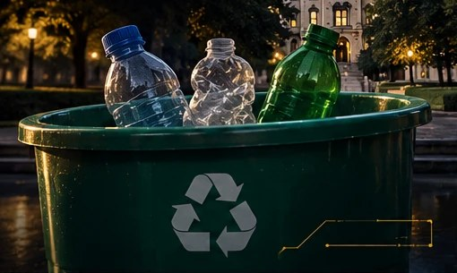
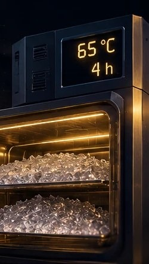
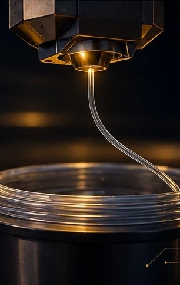

01Collect
Collect
Clear-bag PET-only bins at eight concourse points. Volunteers pull them within ninety minutes of the final whistle, before the residue dries onto the walls.
- Yield
- ~0.7 kg / bin
- Window
- 90 min
- Cost
- $0
Post-consumer PET, single-stream, collected inside the stadium bowl. Shredded, washed, dried to below 50 ppm, extruded at 1.75 mm and printed on open-material machines in the Architecture Library makerspace.
Forty-nine tons of plastic leave this stadium every season and none of it comes back. This is the line that brings it back — from the bin under Section 26 to a printed object on a dorm desk, inside one building, for nine hundred and sixty-eight dollars of capital.
Notre Dame Stadium seats 77,622. Concessions run seven home dates. Nothing sold inside the bowl comes in glass or aluminium alone — the bottle is the default vessel, and the bottle is PET.
The plastic is not lost because nobody collects it. It is lost because collection is where the process ends. Single-stream bins leave campus mixed, get baled, get sold by weight, and the value of a clean, identifiable, single-polymer stream evaporates somewhere between the loading dock and the broker.
Nothing leaves campus between the bin and the print bed. The whole loop fits in a 3 m × 4 m corner of a shared shop, which is the only reason a student group can run it at all.
PET hydrolyses in the melt. Above roughly 50 ppm moisture the chains cleave, viscosity collapses and the strand comes out foamed and brittle. The $45 food dehydrator is the single most load-bearing line item in the budget.
The Stratasys F120 and F370 in the Innovation Lab are closed-material: the machine reads a chip on the cartridge and will not run third-party filament. The open-material Prusa i3 machines in the Architecture Library makerspace will. That single fact decided where this project lives.
A slicer assumes 1.75 mm. Drift past ±0.05 mm and extrusion goes under or over by enough to ruin a part. Pull speed is closed-loop against a $12 optical gate, not against a person watching a caliper.

Clear-bag PET-only bins at eight concourse points. Volunteers pull them within ninety minutes of the final whistle, before the residue dries onto the walls.
Caps and tamper rings are HDPE and PP. They melt two hundred degrees below PET and will jam a barrel. They come off by hand, and they go into their own bin — they are the feedstock for the pressed sheet parts.

Down to 6 mm flake, then four hours at 65 °C in a stacked-tray dehydrator with a hygrometer taped inside the lid. Flake goes from the dryer to the hopper in under ten minutes or it goes back in.

Single-screw extrusion at 255 °C, air gap, then a puller whose speed is trimmed by an optical diameter gate. The winder is a stepper on a lead screw so the coil lays flat instead of birdnesting.
Open-material Prusa i3 machines, 0.6 mm nozzle, 250 °C, enclosed and slow. Recycled PET is stringier and less forgiving than virgin PETG, so the profile trades speed for a part that does not delaminate.
What $968 does not buy: a hopper dryer, a gravimetric feeder, a vented barrel, or a spare of anything that is not on line 11. Every one of those is a real gap, and every one of them is listed as an open risk in the dossier rather than quietly assumed away.
Two branches off one sort. Bottle wall goes to filament; caps and tamper rings, which are the wrong polymers for the barrel, go to a heated platen press and come out as sheet. Nothing in the budget is a research instrument — the most expensive single item is a shredder head bolted to a gearmotor.
These are the parametric models, rendered live in your browser. They are not photographs and nothing here has been manufactured yet — the first run is scheduled for the week after the line passes its diameter test. Drag any of them to turn it. The horizontal banding is the 0.28 mm layer height, drawn at true scale.
A weighted block with three channels. Charging cables stop falling behind the desk, which is the single most complained-about object failure in a residence hall.
Windowsill planter or pen cup depending on which way up you leave it. Vase-mode single wall, so it prints in one continuous extrusion and cannot delaminate between perimeters.
A flat keyring tag with a recess for the NFC inlay. It is the cheapest part on the list and the only one that carries the provenance record, which makes it the one that matters.
An NTAG213 inlay sits in a 1 mm recess under the last four layers. Tap a phone against it and you get the batch: which home date the bottles were pulled from, how many went into this part, the extrusion log for that spool, and the machine and profile that printed it.
The point is not the novelty. A closed loop that nobody can audit is a claim, not a loop. The tag is the audit.
TNF : 0x01 Well-known
TYPE : 'T' Text, en-US
BATCH : IC-2025-11-08-CONC26B
SPOOL : S-014 sigma 0.031 mm lot 4.1 kg
PART : MDL-01 84 g 3.4 bottles
PRINT : PRUSA-04 R-PET-0.6 1h51m 2025-11-19
HASH : 9f2c-41ab-7de0 // batch record, signed
URL : ic.nd/b/9f2c41ab // resolves to the full logThe ceiling was a thousand. The thirty-two dollars left over is not slack, it is the contingency for the die — brass orifices wear, and a worn die is the failure that stops the whole line.
| # | Item | Branch | Cost |
|---|---|---|---|
| 01 | Shredder head + ¼ hp gearmotorRe-geared cross-cut cassette, two-pass to 6 mm flake | Shared | $186 |
| 02 | Six-tray food dehydrator65 °C forced convection, four-hour cycle | Shared | $45 |
| 03 | 12 mm single-screw barrel + augerMachined in the student shop, steel tube and hopper throat | Filament | $128 |
| 04 | Band heaters ×3, PID controllers ×2Two barrel zones plus die, K-type, SSR switched | Filament | $96 |
| 05 | Brass die, 2.10 mm orificeOversized for die swell and draw-down | Filament | $22 |
| 06 | Optical diameter gatePhotodiode pair and slit, closes the loop on puller speed | Filament | $12 |
| 07 | Puller: stepper, rollers, driverSilicone-faced, geared, trimmed against the gate | Filament | $74 |
| 08 | Winder: stepper, lead screw, arborTraversing lay so the coil does not birdnest | Filament | $58 |
| 09 | Sheet press: 2 × 750 W platens + frameCaps and tamper rings, pressed to sheet | Sheet | $198 |
| 10 | Frame, wiring, fusing, enclosure80/20 offcuts, fused inlet, e-stop, polycarbonate die guard | Shared | $98 |
| 11 | Consumables and sparesPTFE, thermal paste, belts, spare thermocouple, spare die | Shared | $51 |
| Capital total | Ceiling $1,000 | $968 |